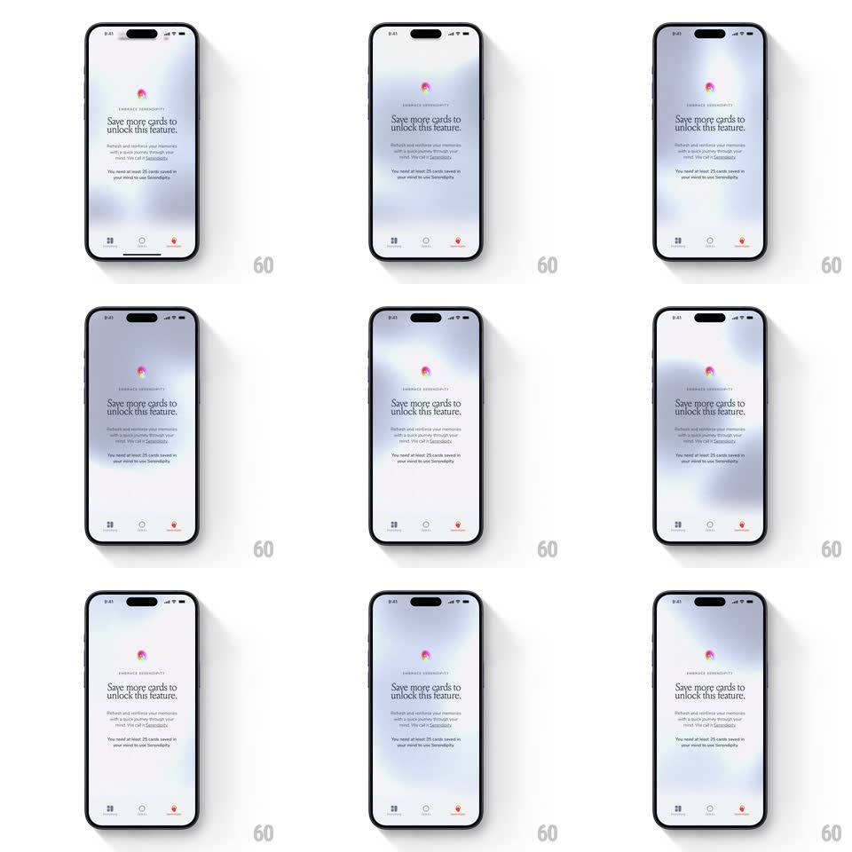

Media
Frame-by-frame

Rebuild this animation 1:1: mymind's Serendipity empty state - a soft colorful gradient orb blooms at the top while the locked-feature copy fades and slides up beneath it.

Rebuild this animation 1:1: mymind's Serendipity empty state - a soft colorful gradient orb blooms at the top while the locked-feature copy fades and slides up beneath it. ## Integration Integration: stack-agnostic spec - springs given as stiffness/damping, timed motions as duration + curve; map every value to your framework and animation library of choice. ## Scene A near-white screen over the standard bottom nav. At top center, a blurred gradient orb (pink, blue, yellow bleeding into each other) glows against the white. Below it: a small-caps "EMBRACE SERENDIPITY" label, a serif headline "Save more cards to unlock this feature.", body copy, and a note that at least 25 saved cards are required. ## Motion spec Pattern: gentle bloom + staggered rise. - Entry (0-1200ms): the screen starts empty white; the orb fades in from nothing (opacity 0 to 1, 900ms) while drifting up 20px, its internal colors slowly swirling (gradient positions rotate ~15deg over 8s, continuous). - The label fades in first (300ms, at 400ms), then the headline slides up (translateY 16px + fade, 350ms, at 550ms), then the body copy (at 700ms), then the requirement line (at 850ms) - same 16px rise each. - The orb breathes forever after: scale 1 to 1.04 over 4s, ease-in-out, alternating; its blur radius pulses +-6px with it. - Bottom nav fades in last (200ms) with the active tab's dot indicator. ## Calibration - Everything is slow and low-contrast: no element moves faster than 250ms of travel, no hard shadows. - The orb stays blurred at all times - it is atmosphere, not an object. ## Reduced motion Static orb and copy; no breathing. ## Don't miss - Typography mix is the brand: tracked-out small caps label, large serif headline, sans body - keep all three distinct. - The page sells patience: nothing on it is tappable except nav; no CTA button appears.